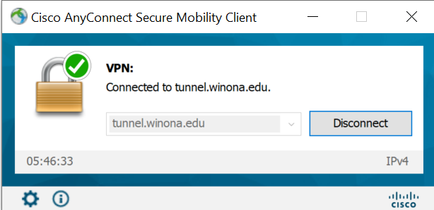

Network convergence-good or bad? Note: do not only rely on the book for the answer. Consult LinkedIn Learning and Wikipedia.
(50) 1. Briefly explain how WAN designs are being affected by the convergence of data, voice and video networks. Think about this in terms of network reliability and redundancy and the 'Chaos Monkey'.
Read Hands-On Project 10-1 In step 2 choose 'Network Connections' NOT 'Network and Internet'. Follow steps 3 through 6. In step 7, click 'Change adapter options' in the top right of the page. In step 11, on your laptop the 'File and Printer Sharing' can be enabled-but please do not.
After completing this project, review the data at this website on U.S. home internet connection type. If you search the internet for similar data you will see that dial-up internet connections are declining. Indeed, in some countries many people access the internet with their cell phones, and do not have laptops or desktop computers. In historical terms, dial-up internet access was a stop-gap measure until better, lower cost methods were available. You may also want to search for 'dial up connection maximum speed'-you may be surprised.
(50) 2. Reflect on this project and internet research. Briefly explain the benefit to an individual (or a country) of waiting a few years until a technology matures.
Do Hands-On Project 10-2 But instead of creating a Windows 10 VPN connection, use the 'Cisco AnyConnect Client' that is already installed on your laptops. Refer to Formative00 Exercise 8 for a refresher on connecting.

In Somsen 301 please use the HP USB-C dock with the VPN connection by the teaching station. You can also establish a VPN connection from off-campus.
(50) 3. Briefly explain the benefit to a business of providing employees VPN access to the corporate network.
(50) 4. Refer to step 8. After issuing the ipconfig /all command, make a screenshot showing the address and other settings of your VPN connection to the WSU network.
ipconfig /all
Save the screen shot as "Ex1" in your ' ' folder. You will be combining screen shots from several exercises at the end of this assignment, just as you did in Formative00-PDF File Creation.
The Packet Tracer Labs are accessible from MindTap in two ways:
The files needed for Packet Tracer labs are available on the Cengage Website, in Professor Paulson's OneDrive ReadOnly folder for this course, or in the WSU network drive ReadOnly folder for this course. You must save a copy of these files to your folder.
Do Hands-On Project 10-1
(50) 5. After completing the lab with step 9, use the PC0 Command Prompt to determine the PC0 IPv4 address. Enter that address below.
(50) 6. Use the PC1 Command Prompt to ping PC0 using the address from the last question. Make a screen shot of the ping results.
Save the screen shot as "Ex2" in your ' ' folder. You will be combining screen shots from several exercises at the end of this assignment, just as you did in Formative00-PDF File Creation.
Do Hands-On Project 10-2 to configure a WAN link between two routers on a serial connection.
NOTE: In step 4 there is an error. Click on Router1, NOT Router0. The rest of the instructions are correct.
In step 10, after entering the username and password it could take up to a minute before the line protocol changes to 'line up'. Make a screen shot of the Router0 CLI window making sure to show that Router0 is 'line up', and the previous commands that you entered.
(50) 7. Save the Router0 CLI screen shot. Save the screen shot as "Ex3" in your ' ' folder. You will be combining screen shots from several exercises at the end of this assignment, just as you did in Formative00-PDF File Creation.
Follow the instructions in Packet Tracer Lab 10-3 to configure a DSL connection to an ISP. When done, answer the question below. For background information please refer to the book.
In step 7 please note that the DSL Modem may be named 'DSL Modem0' instead of 'DSL Modem1'. This will not affect the lab. In step 9 press the 'Realtime' button in the lower right. This will speed up the ping command that you perform in this step.
(50) 8. After pinging Server1 in step 9 make a screen shot of the PC0 CLI command prompt showing a successful ping command. Save the screen shot as "Ex3" in your ' ' folder. You will be combining screen shots from several exercises at the end of this assignment, just as you did in Formative00-PDF File Creation.
Use a web browser to verify that you have published your website to https://classes.winona.edu/... Check that your name, StarID, email, class, semester, section and all of your answers are correct and visible. From the menu choose File>Print... and using "Microsoft Print to PDF" save a copy of this assignment as a .pdf file in your ' ' folder.
(50) 9. Save your file 'WebPage.pdf' to the ' ' folder.
Create one .pdf (portable document format) file from the screen shots that you have taken by following these steps.
(50) 10. Save your file 'ScreenShots.pdf' in your ' ' folder.
Use PDFill to merge the WebPage.pdf file with the ScreenShots.pdf file, and save it as 'Summative10.pdf' in your ' ' folder.
(50) 11. Upload your file 'Summative10.pdf' to the D2L 'Summative10' Assignment folder.
Use a browser to view your completed and published website at: https://classes.winona.edu/... Ensure that you have linked this assignment on your home page. Note that your screen shots do not have to be completed to perform this step.